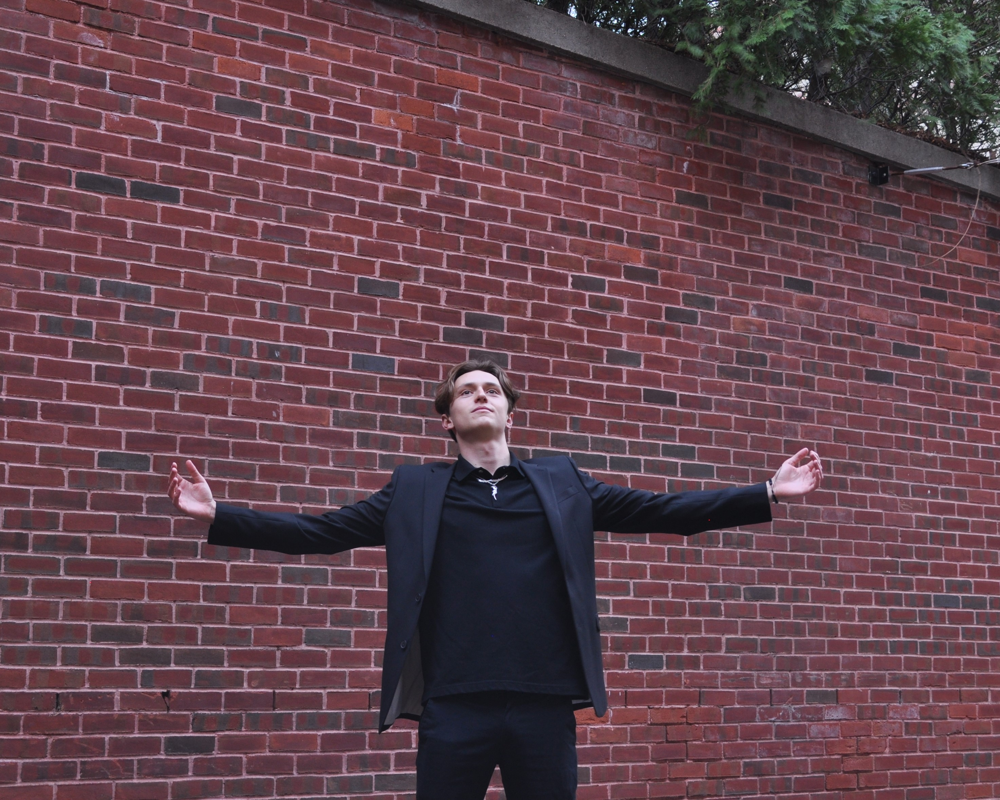

Keaton Auld
Keaton Auld is a multi-hyphenate artist blurring the lines between modern rap, introspective folk, electronic dance, and raw songwriting. Operating entirely independently under Telperion Music, Keaton is involved in every step of the creative process—from writing and vocal performance to producing his own instrumentals and mixing his records.
A fresh presence in the music scene, Keaton is an independent rapper and producer based in Massachusetts. Building on his own life experiences, Keaton writes introspective indie pop rap tracks that capture his thoughts and his interactions with the world around him. His debut album, hail mary, released on February 3rd, 2025, demonstrates a wide range of emotions, styles, and genres: from tracks like overdrivethat protest against the system, to hiking gear which boasts ambition for the future, to introspective melodic R&B tracks like in my ear.
Always fascinated with music, Keaton has been playing piano since the age of seven, learning classical music, and then exploring film soundtracks and pop songs. In 2020 he began making beats in FL Studio. His music career began in November of 2023, when he released his first single, Game On, an instrumental EDM track. He followed this up with the more reflective folk song Jailbreak, which included him singing over a somber guitar. Continuing this alternation between EDM and folk, Keaton releasedStay in Your Lane and Hope’s Joyous Cry, the latter of which being a dramatic musical adaptation of the Puerto Rican poem “The Final Act” by Jose de Diego.
Then, in late 2024, Keaton pivoted style completely, releasing the rap single overdrive. With this, he began the rollout of his debut rap album, hail mary, which has garnered hundreds of streams. The album’s narrative arc is framed as an arena game, and serves as a tour of Keaton’s mind. Keaton is continuing to work in the studio, with a folk ballad release scheduled for the summer.
